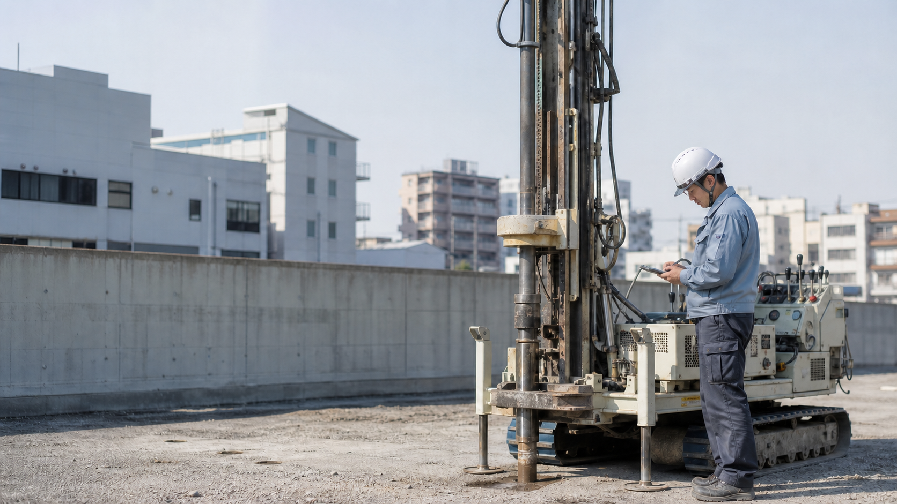
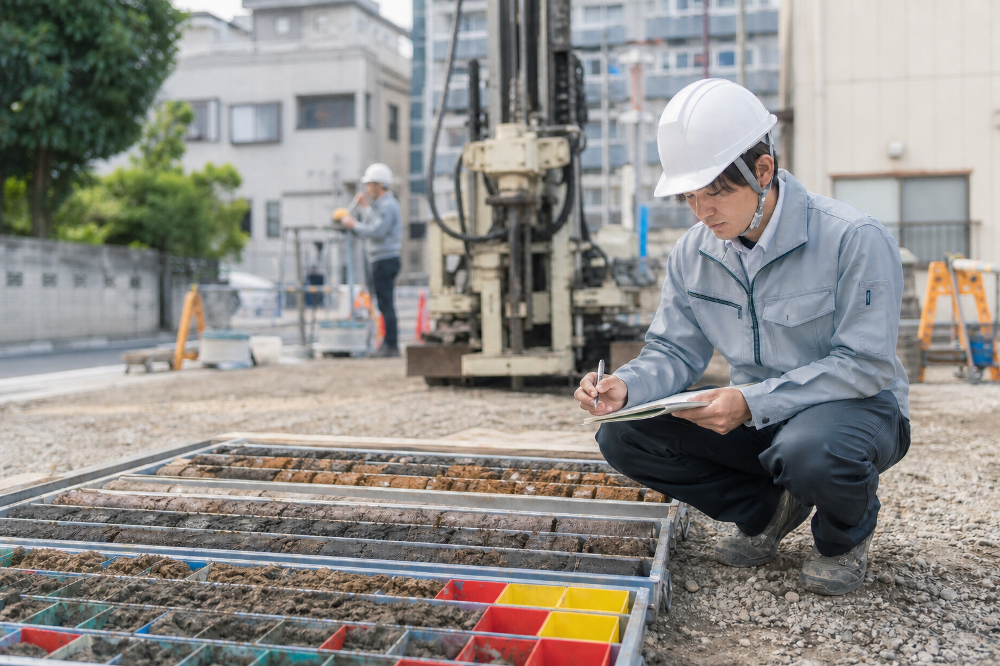
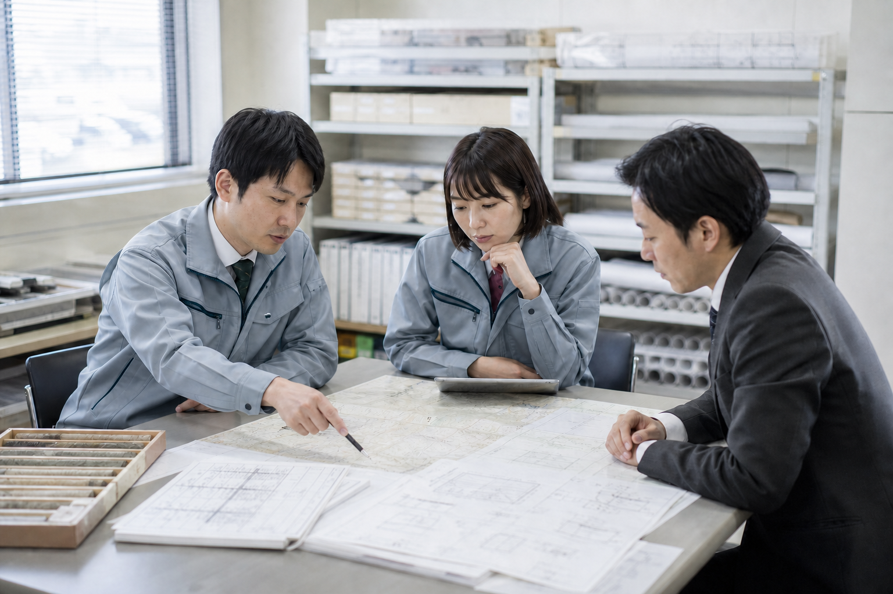
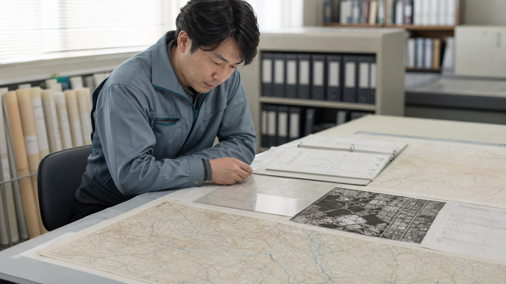
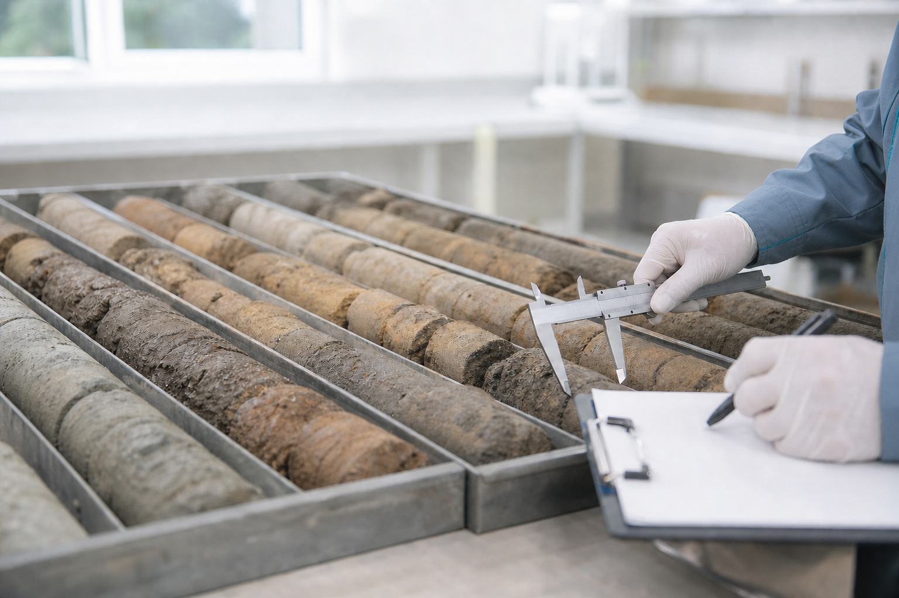

地盤と地下水の調査・解析を行っています。
地盤、地下水、雨水に関する調査・解析、設計支援を行う技術会社です。
現地調査や観測で得たデータをもとに、地盤の状況や地下水位、雨水の流れなどを確認します。調査結果は、設計や工事の検討に必要な資料として報告します。
業務内容

地盤調査
ボーリング、標準貫入試験、室内土質試験などを行い、地層構成や支持層、軟弱層の分布を調べます。

地下水観測
観測孔を設置し、地下水位を測定します。必要に応じて継続観測を行い、降雨や季節による水位の変化も確認します。

雨水・排水解析
敷地内外の雨水の流れを確認し、計画に応じて流出量や必要な貯留量、排水方法を検討します。

既往資料・地歴調査
旧版地形図、既往のボーリング柱状図、航空写真、造成記録などを確認し、土地の履歴や既往の地盤情報を調べます。

調査結果を、設計や工事の資料に。
地盤は、同じ敷地内でも場所によって異なることがあります。地形や造成の履歴、地下水の状況なども確認しながら、調査結果を整理します。
現地で得たデータを、調査・解析の結果としてまとめます。
業務内容を見るお知らせ
- 夏季休業期間のお知らせ
- 技術記事「観測孔を維持する」を公開
- 2027年度技術職採用情報を更新